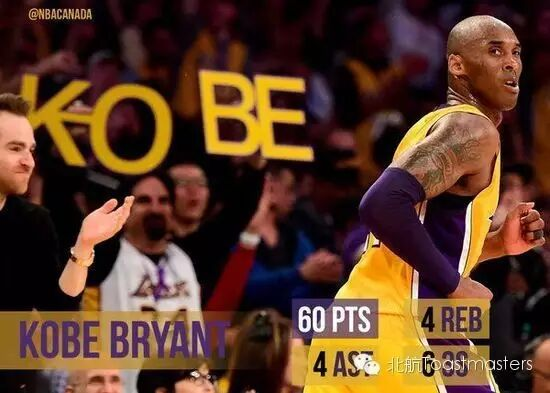
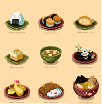
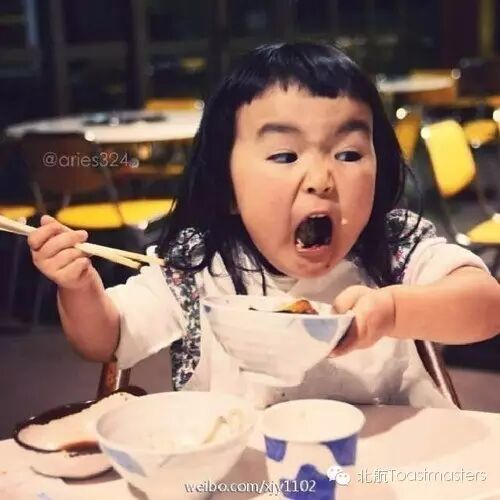
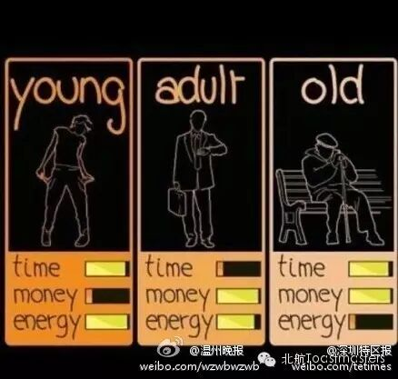

Time: 19:30-21:30, Friday,April 15.
Venue: Room B208, New Main Building, Beihang University.

Toastmaster Joshua
Table Topic Master Vance
Who doesn’t like a hero? Have you ever dreamed to be a superhero tofight against bad guys? Or imagined to sit beside the tower window, waiting foryour prince charming, riding a white horse to rescue you?
All of us had our own hero in heart. Some are real, some are man maid.Some of them have extraordinary powers, some are strong in another way. Weappreciate their personality, admire their power and touched by their stories.
I really enjoy watching MARVEL movies because they brought us somany distinctive and amazing heroes. From Superman to Deadpool, from Captain Americato Director Coulson, these heroes with all kind of capabilities impressed us somuch. They not only entertain but also inspire us to explore what we don’tunderstand, to work together fixing all the difficulties and to keep faith atwhat we believe.
But being a hero is never easy. Yesterday was a really hard day forsports lovers. Kobe farewell to his 20 years NBA career and get retired, aftercreating such a long and extraordinary legend. Leo Messi’s Barcelona, 0-2 losta must-win match and got eliminated in Euro champion league. It must be reallytough for both of our heroes. Now we understand that sometimes heroes also havetheir hard times, they also fail, get tired, injured or old.
But you know what, our heroes, they never leave us along. Wheneverwe get hurt, confused, frustrated or about to give up, there are something keepremind us to hold on. That’s what our heroes taught us, why and how we explore,love, tolerate, share, believe and take. They gave us the essential powers.
This week we talk about HERO, our table topics will be led by Vanceand we have 3 beautiful girls delivering their prepared speech. What are youwaiting for? Come to join us in Beihang toastmasters on this Friday.

Fiona (CC1)
--- My story with food
This week our cute Fiona is giving herfirst speech, and she will tell her story about food. Youwant to know more about our new member? And her favorite delicacy? You shouldn’t miss it.

Amy (CC2)
---Fill your belly
4 questions confused me most, Who am I? Where am I from? Where I am going? What to eat?
Tonight our beautiful Amy is trying to tellus what can you “Fill your belly”, you are going to like her taste I ensure you.

Crystal (CC4)
---3 stages of life
In the beginning of this year I got my first Mentee, a powerful and beautiful one. This is her 4th speech in 30 days. And she is amazing us by “3 stages of life”.
What is Toastmasters?
Toastmasters International (TI) is a nonprofit educational organization that operates clubs worldwide for thepurpose of helping members improve their communication, public speaking, andleadership skills.
You can find us by the following map of Beihang University.

https://mp.weixin.qq.com/s/pbD6hR2eg2ad5_guBKfJrA
本页为抢救式本地归档，图文已永久保存。